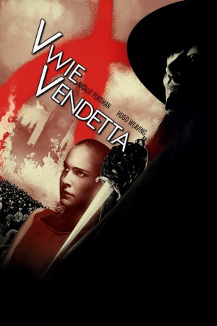

gesehen am 18.04.2015
gesehen am 18.04.2015Alternativ: V for Vendetta gesehen am 18.04.2015
 
 IMDB-Wertung: 8.2 / 10
IMDB-Wertung: 8.2 / 10  IMDB-TOP-Platzierung: 151
IMDB-TOP-Platzierung: 151  Metascore:
Metascore: 
Tells the story of Evey Hammond and her unlikely but instrumental part in bringing down the fascist government that has taken control of a futuristic Great Britain. Saved from a life-and-death situation by a man in a Guy Fawkes mask who calls himself V, she learns a general summary of V's past and, after a time, decides to help him bring down those who committed the atrocities that led to Britain being in the shape that it is in.
Jahr: 2005
Dauer: 132 Minuten
FSK: 16
Land: USA Studio: Warner Bros.Tonspuren: DD5.1 - ,
Untertitel:
Auflösung: 1080p (1920x792) Größe: 10752 MB
Genre: Action, Drama, Sci-Fi, Thriller
Regisseur: James McTeigue
Drehbuch: Lilly Wachowski, Lana Wachowski, David Lloyd
Soundtrack: Dario Marianelli
Darsteller:
 Natalie Portman als Evey
Natalie Portman als Evey Hugo Weaving als V
Hugo Weaving als V Stephen Rea als Finch
Stephen Rea als Finch Stephen Fry als Deitrich
Stephen Fry als Deitrich John Hurt als Adam Sutler
John Hurt als Adam Sutler Tim Pigott-Smith als Creedy
Tim Pigott-Smith als Creedy Rupert Graves als Dominic
Rupert Graves als Dominic Roger Allam als Lewis Prothero
Roger Allam als Lewis Prothero Sinéad Cusack als Delia Surridge
Sinéad Cusack als Delia Surridge John Standing als Lilliman
John Standing als Lilliman Eddie Marsan als Etheridge
Eddie Marsan als Etheridge Ian Burfield als Tweed Coat Fingerman
Ian Burfield als Tweed Coat Fingerman Cosima Shaw als Patricia
Cosima Shaw als Patricia Megan Gay als BTN News Poppet
Megan Gay als BTN News Poppet Juliet Howland als Middle Class Mum
Juliet Howland als Middle Class Mum Malcolm Sinclair als Major Wilson
Malcolm Sinclair als Major Wilson Carsten Hayes als Evey's Father
Carsten Hayes als Evey's Father Imogen Poots als Young Valerie
Imogen Poots als Young Valerie Ian T. Dickinson als Avian Flu News Poppet
Ian T. Dickinson als Avian Flu News Poppet David Leitch als Convenience Store V
David Leitch als Convenience Store V Richard Laing als Parliament Lieutenant
Richard Laing als Parliament Lieutenant Tony Cook als Soldier , uncredited
Tony Cook als Soldier , uncredited Christopher Fosh als V Follower , uncredited
Christopher Fosh als V Follower , uncredited Forbes KB als Soldier , uncredited
Forbes KB als Soldier , uncredited João Costa Menezes als Soldier , uncredited
João Costa Menezes als Soldier , uncredited Wolfgang Stegemann als Creedy Guard , uncredited
Wolfgang Stegemann als Creedy Guard , uncreditedDatei: X:\Comic-Filme\V wie Vendetta (2005, FSK16, 1920x792).mkv seit 21.02.2015
Festplatte: Comicverfilmungen+MusikCD
 Es gibt insgesamt 44 Filme in der Gruppe 'Comic-Filme'
Es gibt insgesamt 44 Filme in der Gruppe 'Comic-Filme'